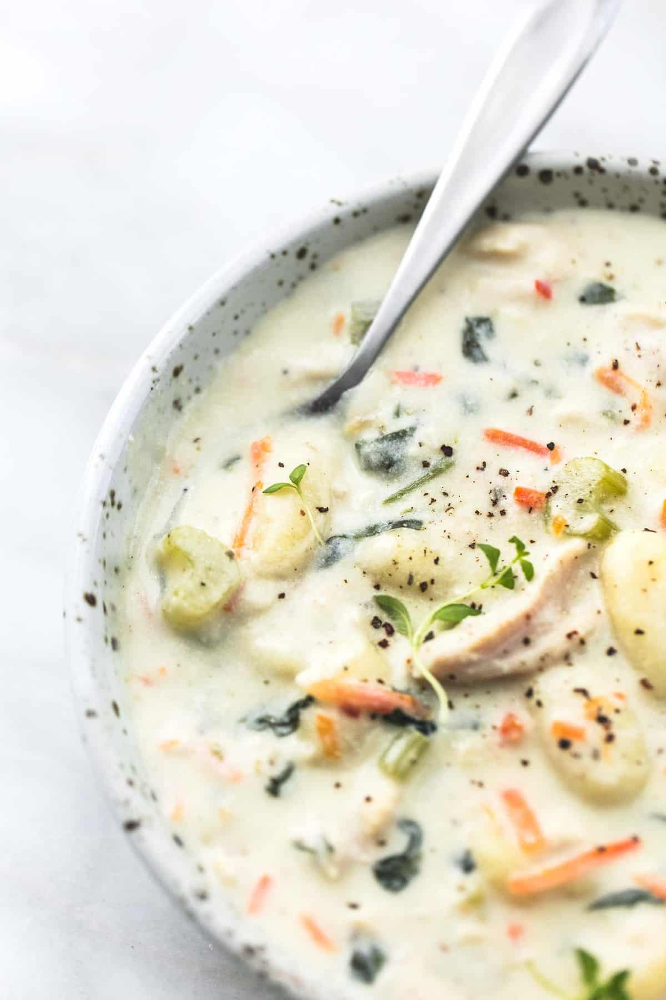

Chicken Gnocchi Soup Recipe

Olive Garden Chicken Gnocchi Soup
Olive Garden Chicken Gnocchi Soup copycat is every bit as creamy and delicious as the restaurant version, made in less than 30 minutes!
Ingredients
- 3-4 boneless skinless chicken breasts - cooked and diced
- 1 stalk of celery - chopped
- 1/2 white onion - diced
- 2 teaspoons minced garlic
- 1/2 cup shredded carrots
- 1 tablespoon olive oil
- 4 cups low sodium chicken broth
- Salt and pepper to taste
- 1 teaspoon thyme
- 16 oz potato gnocchi
- 2 cups half and half
- 1 cup fresh spinach
Steps
- Heat olive oil in a large pot over medium heat. Add celery, onions, garlic, and carrots and saute for 2-3 minutes until onions are translucent.
- Add chicken, chicken broth, salt, pepper, and thyme, bring to a boil, then gently stir in gnocchi. Boil for 3-4 minutes longer before reducing heat to a simmer and cooking for 10 minutes.
- Stir in half and half and spinach and cook another 1-2 minutes until spinach is tender. Taste, add salt and pepper if needed, and serve.